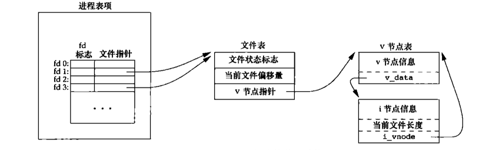
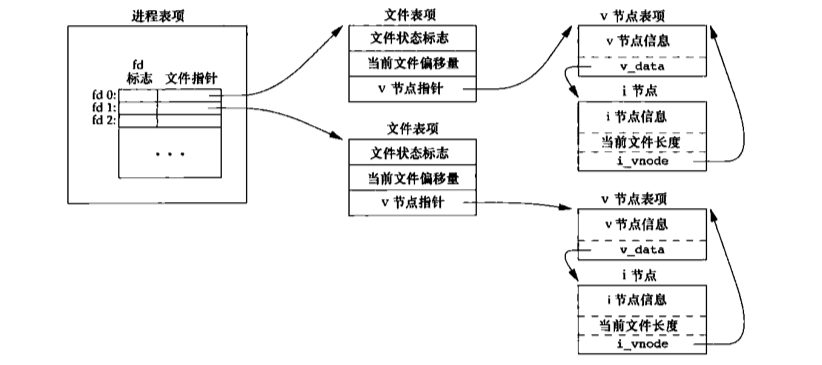
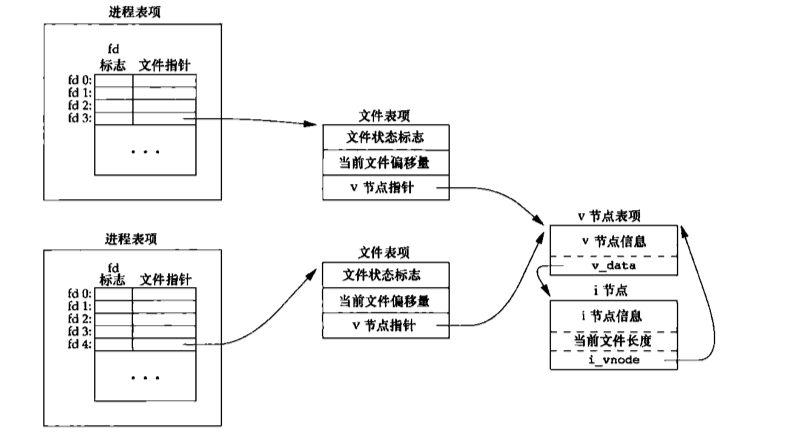

int open(const char* path, mode_t mode);
以上是mode_t的参数，其中(O_RDWD | O_CREAT | O_TRUNC)三个参数一起传入可以实现和creat()函数一样的效果，creat()函数是早期unix系统的遗留问题额外添加，现在可以由open()函数直接代替。对于打开文件错误等其他原因会使linux设置errno变量，对应某些错误的原因， 其中需要注意的是定义errno变量的头文件为<errno.h>而定义打印字符错误提示符的函数char *strerror(int errno);函数是定义在头文件<string.h>中的 。
int close(int fd);
关闭一个文件描述符号，同时也会关闭设置在这个文件上的所有记录锁。
off_t lseek(int fd, off_t offset, int whence);
其中off_t的原型是 int64_t 也就是 long long型
用来查看文件描述符fd当前读取到的位置偏移量，其中实现方法使用的是fd所对应的结构体(之后解释)。使用对象是网络套接字和标准输入输出描述符则会出现报错。
ssize_t read(int fd, void* buf, size_t nbytes);
read成功，返回读到的字节数。如果已经达到文件尾部，则返回0。
如果 size_t nbytes所给定的数值过大，超过文件描述符中数据的长度，则直接全部读取，并且返回fd中所有的数据的 长度，下一次读取时返回 0。
如果读取的是管道、网络套接字或者标准输入与标准输出且其中没有数据，则会出现 堵塞，将描述符设置为 NONBLOCK则会直接返回-1并且设置errno。read函数不对buf参数负责，如果 buf空间小于nbytes和fd中数据长度, 空间大小不够的buf持续读入可能会出现越界情况。
ssize_t write(int fd, void* buf, size_t nbytes);
write函数则和read函数返回值相同，通过fd所绑定的结构体中所记录的当前文件偏移量写入数据。其中O_APPEND方式打开会影响文件状态标志(细节见文件的数据结构)。如果size_t nbytes的数值超过buf，那么只会写入buf中的所有数据并且返回buf的长度。出错时候设置errno。
ssize_t pread(int fd, void* buf, size_t nbytes, off_t offset); ssize_t pwrite(int fd, const void* buf, size_t nbytes, off_t offset);
调用pread方法相当于调用了lseek后调用read，与自己手动调用这两个函数的区别：
int dup(int fd); int dup2(int fd, int fd2);
dup和dup2函数是干什么的用一张图片就可以清楚解释：  返回一个新的文件描述符，它所指向的文件和参数fd指向的文件相同。
dup函数返回一个新文件描述符，是当前文件描述符中最小值。对于dup2，可以使用fd2参数来指定新的描述符的值，如果fd2已经打开，就先关闭fd2。如果fd2等于fd，则直接返回fd2。
readv和writev即散布读和散布写，可以在一次调用读写多个缓冲区。使用这种方案比多次调用read或者write函数效率要高，毕竟谁也不想调用相同的系统调用多次，徒增切换花销。
x
ssize_t readv(int fd, const iovec *iov, int iovcnt);ssize_t writev(int fd, const iovec* iov, int iovcnt);// iov是一个指向iovec结构体的数组，iovcnt表示数组个数struct iovec{ void *iov_base; /* 起始地址 */ size_t iov_len;/* 长度 */};储存映射能将磁盘上的一个文件直接映射到内存中的一个缓冲区上，当从缓存区中读写信息就等同于在文件中读写信息，即在不实用read和write的情况下执行IO操作。
xxxxxxxxxx/* 返回值为映射区指向的地址 */void *mmap(void *addr, size_t len, int prot, int flag, int fd, off_t off);/* 改变映射区的权限 */int mprotect(void *addr, size_t len, int prot);/* 关闭映射区 */int munmap(void* addr, size_t len);addr参数指向一个地址，表示将磁盘数据映射到这个地址上，建议设置为0，由操作系统接管。 prot表示映射地区的保护要求，可按位打开
xxxxxxxxxxPROT_READ // 映射区可读PROT_WRITE // 映射区可写PROT_EXEC // 映射区可执行PROT_NONE // 映射区不可访问flag字段可以用来设置映射区的属性等
xxxxxxxxxxMAP_FIXED // 必返回指定的addr地址，不建议MAP_SHARED // 对于映射区的操作等同于对文件的操作MAP_PRIVATE // 对于缓存的操作不改变文件本身 调试可用fd为指向的文件，off表示文件偏移量 最后，fork的子进程是可以继承映射区的，但是exec后就不共享了。
每一个进程中都存在一个 进程表项，其中存有fd所对应的文件指针，文件指针又指向 文件表项，文件表项中储存着当前文件状态标志，当前文件偏移量(只针对打开此文件的进程，每一个进程维护着自己的文件偏移量)，以及v节点指针(linux中不使用vnode)。

如果两个独立的进程打开了相同的文件： 
使用O_APPEND打开方式的时候， 每次write往文件中写入都会实时通过文件v节点指针(i节点指针)获取文件长度，并且加上偏移量进行写入，这种方法和使用lseek函数实现的有差别。
例如有两个进程A与B，A和B都打开了相同的文件(没有使用O_APPEND标志位)，A和B的进程中都有着自己独立的 文件表项，有着自己的 文件偏移量，文件初始大小1500， 之后A使用lseek获取了文件大小， 想往文件尾部写入100字节，但是巧合的是这时候内核切换了进程。进程B开始运行，进程B进行和A一样的操作， lseek文件得到1500，写入100字节，之后文件长度 更新到1600。内核再次切换到进程A运行， 从1500处开始写入，进而发生错误。 如果该用O_APPEND方法就可以避免此问题，因为O_APPEND标志位是偏移量+文件长度的方式，可以实时获取真正的文件长度，但是这种方法也存在问题。另一种解决方式正是原子操作。
在理解文件权限之前，我们先了解一下文件权限是怎么存储在linux中的。linux提供许多API来获取文件信息的函数
xxxxxxxxxxint stat(const char* pathname, struct stat* buf);int fstat(int fd, struct stat *buf);int lstat(const char* pathname, struct stat* buf);int fstatat(int fd, const char* pathname, struct stat* buf, int flag);// 成功return 0，出错return -1对于返回的结构体stat的定义如下
xxxxxxxxxxstruct stat{ mode_t st_mode; /* 文件类型和权限都存储在此 */ ino_t st_ino; /* i-node节点个数 */ dev_t st_dev; dev_t st_rdev; nlink_t st_nlink; uid_t st_uid; /* 所有者ID */ gid_t st_gid; /* 所有组ID */ off_t st_size; /* 文件长度，主要用于普通文件 */ struct timespec st_atime; /* 最后访问时间 */ struct timespec st_mtime; /* 最后修改时间 */ struct timespec st_ctime; /* 最后改变文件状态时间 */ blksize_t st_blksize; blkcnt_t st_blocks; /* 磁盘中分配了多少个块 */};对于其中比较常用的几个字段，如st_mode可以使用Linux所定义的宏来进行访问。
xxxxxxxxxxS_ISREG() /* 是否为普通文件 */S_ISDIR() /* 是否为目录文件 */S_ISCHR() /* 字符特殊文件 */S_ISBLK() /* 块特殊文件 */S_ISFIFO() /* 管道符文件 */S_ISLNK() /* 符号链接 */S_ISSOCK() /* 是否为套接字 */Linux中有许多关于ID概念
xxxxxxxxxx* 实际用户ID* 实际组ID* 有效用户ID* 有效组ID* 附属组ID* 保存的设置用户ID* 保存的设置组ID
对于stat结构体中存在的两个字段st_uid和st_gid分别对应 文件的所有者 和 文件的所有者组 。 当我们以swagger用户登陆时候，我们所登陆的那个shell的ID也就是swagger用户的ID，称为 实际用户ID和实际用户组ID 。
我们可以通俗的暂时理解 实际用户ID和实际用户组ID是一个操作者的权限 ，而 有效用户ID和有效用户组ID是一个运行起来的进程的权限 ，带着这个暂时的理解，我们来看一个例子。
当一个可执行文件执行的时候，这个文件所执行后生成的进程会有一个 有效用户ID和有效用户组ID ，它们通常就是这个文件(可执行文件)的 执行者的实际用户ID 。当然这个所谓的 执行者用户ID到底有没有权限执行这个文件我们先不讨论 ，假设swagger用户可以执行一个文件，那么那个文件执行后生成的进程的 有效用户ID和有效用户组ID 就是swagger用户的 实际用户ID和实际用户组ID 。
我们先创建如下程序：
xxxxxxxxxxint main(){ printf("uid: %d\n", getuid()); printf("gid: %d\n", getgid()); printf("euid: %d\n", geteuid()); printf("egid: %d\n", getegid());}我们使用root用户创建以上程序，并且编译得到a.out文件，使用ls -l查看权限如下:
xxxxxxxxxx-rwxr-xr-x 1 root root 8712 Apr 27 16:02 a.out可以看到任何人都用x权限，也就是执行权限。我们使用root先运行一下得到以下结果:
xxxxxxxxxxroot@test:$ iduid=0(root) gid=0(root) groups=0(root)root@test:$ ./a.out uid: 0gid: 0euid: 0egid: 0现在换成swagger用户，先查看swagger用户的id:
xxxxxxxxxxswagger@test:$ iduid=1001(swagger) gid=1001(swagger) groups=1001(swagger)swagger@test:$ ./a.outuid: 1001gid: 1001euid: 1001egid: 1001通过上面的例子可以看到确实当一个文件被运行时候，它的 有效用户ID和有效用户组ID 是和当前的 运行者(运行者的实际用户ID和实际用户组ID) 有关的。
但以上结论并不是一定的，我们可以通过st_mode标志位设置一个文件运行时候的 有效用户ID和有效用户组ID 。我们使用chmod u+s a.out将a.out的设置用户ID标志位设为有效，之后我们再使用root和swagger各运行一次得到：
xxxxxxxxxxroot@test:$ ./a.out uid: 0gid: 0euid: 0egid: 0xxxxxxxxxxswagger@test:$ ./a.outuid: 1001gid: 1001euid: 0egid: 1001以上可以看到，当使用swagger运行之后， a.out进程的euid也就是有效用户ID变成了0 。现在，谜题已经解开。
uid和gid称为实际用户ID和实际用户组ID的，是用来表示我是谁？ 。
euid和egid称为有效用户ID和有效用户组ID的，是用来表示我有多少权限？我能以谁的名义来执行这个程序？ 。接下来我们来验证这个想法
xxxxxxxxxxint main(){ printf("uid: %d\n", getuid()); printf("gid: %d\n", getgid()); printf("euid: %d\n", geteuid()); printf("egid: %d\n", getegid()); int fd = open("/root/test", O_RDONLY); if (fd < 0){ printf("open() fial!\n"); printf("%s\n", strerror(errno)); exit(1); } char *buf = malloc(128); read(fd, buf, 128); printf("content: %s\n", buf); close(fd);}我们尝试使用a.out来读取/root/test文件，这个文件是在/root目录下， 需要拥有root权限才可以读取 !不同用户运行得到:
xxxxxxxxxxroot@test:$ ./a.out uid: 0gid: 0euid: 0egid: 0content: this is root's file! no one can see this except root!!xxxxxxxxxxswagger@test:$ ./a.outuid: 1001gid: 1001euid: 1001egid: 1001open() fial!Segmentation faultswagger没有权限读取/root下文件，必定读取失败。我们尝试使用chmod u+s a.out将a.out的 有效运行ID 设置为root (运行起来的程序以root的名义来跑，但是本身还是属于swagger用户的进程) ，结果:
xxxxxxxxxxswagger@test:$ ./a.outuid: 1001gid: 1001euid: 0egid: 1001content: this is root's file! no one can see this except root!!可以看到，a.out是一个swagger的进程，但是是以root的权限来运行的。由此，我们成功读取到了内容 。